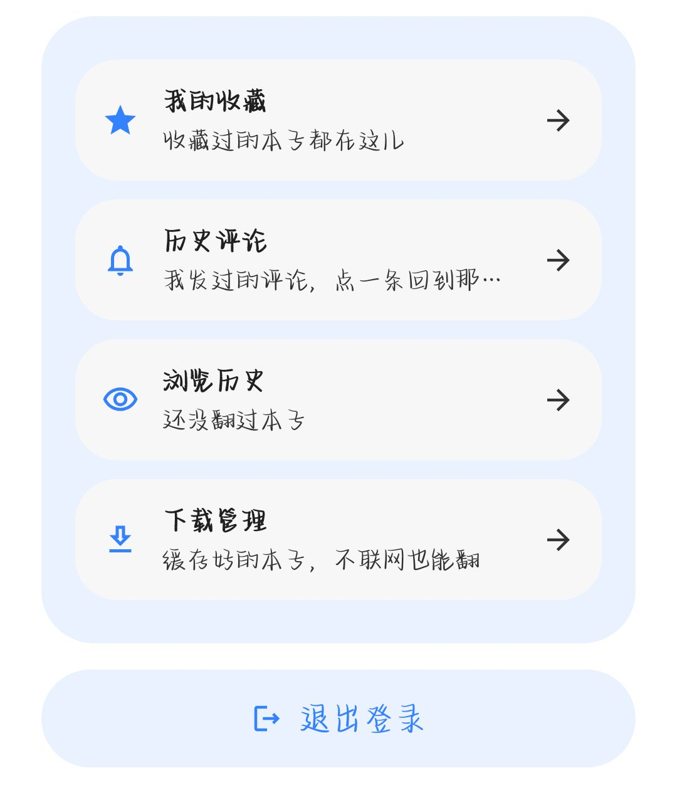
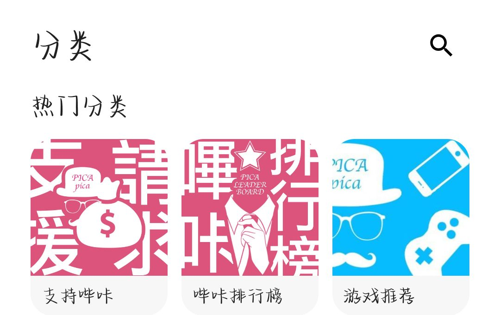
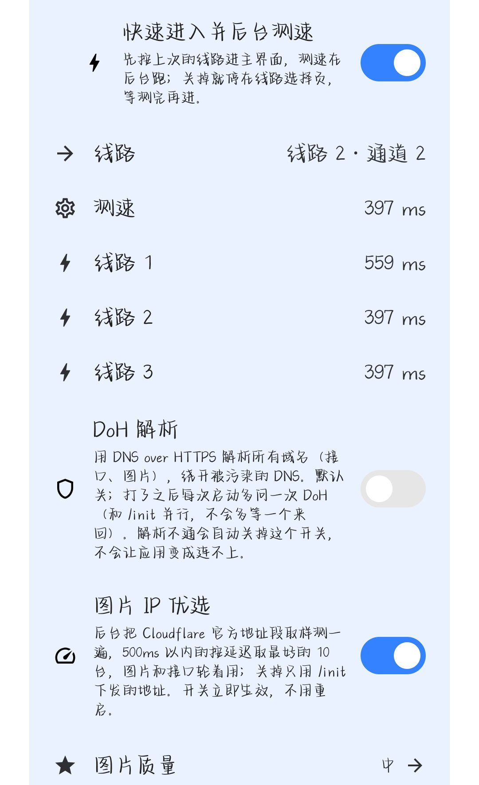
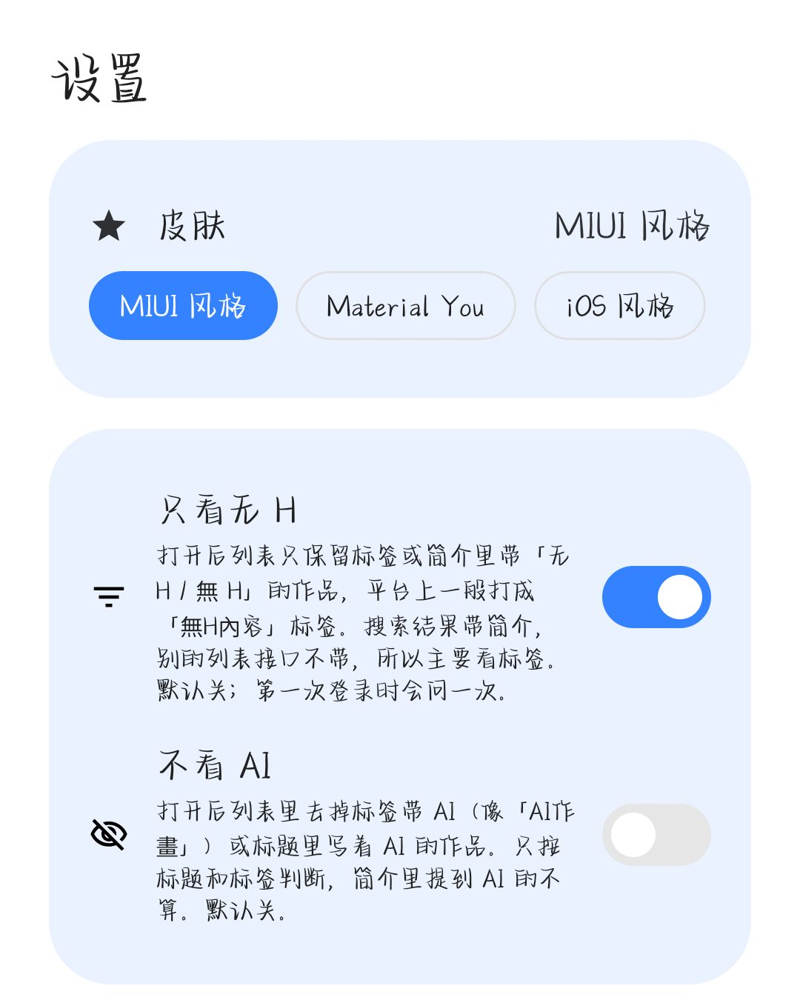
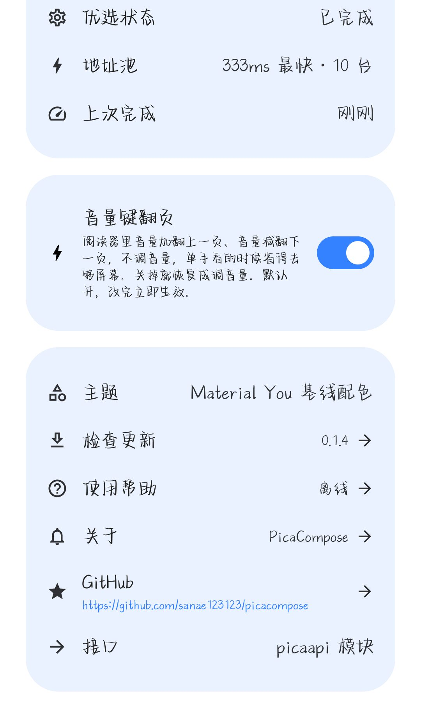

PicaCompose
使用帮助
这一页跟着安装包走，不联网也能看。想找哪一段，点下面的目录。
1第一次打开
从装好到能用，会依次经过四屏：系统问要不要发通知、选线路、登录、两个小问题。前两屏基本不用你动手。
先弹一个系统通知权限
新装第一次启动，安卓 13 以后先弹一个系统的权限框，问能不能发通知。允许了，下载完成、更新提示才提醒得到你；不给也只是收不到通知，其它都不受影响，之后在系统设置里还能开回来。框底下已经有东西在跑了，点掉它就能看见。
选一条线路
看到「选一条线路」这一屏时，其实已经在自动测速了：三条线路各连一遍，最快的默认选中，过一秒自己进去，不用点。
- 线路 1：走系统解析，域名没被污染时最快。
- 线路 2：用站里下发的 IP，选完立即生效。
- 线路 3：同上的备用通道。
三条全连不上，页面会停在这儿，点右下角「重新测速」再来一遍；还是不行就换个网络，流量和 Wi-Fi 交替试一下——多半是这个网络到那边不通，不是应用的问题。
这一屏一般只出现一次。之后启动直接按上次的线路进，测速放到后台；就算测出更快的，也不会在你用到一半时切走。
登录
用哔咔账号登录。没有账号在登录页点「注册一个」；忘了密码走邮箱找回，改完会把新密码自动填回登录框。
「记住账号」默认是开的，只存登录令牌和账号名，不存密码，下次打开直接进主页。关掉会把已经存的令牌一起清掉，下次得重新输。
最后两个小问题
先问「第一次用，先看看帮助？」。选「看看」打开的就是你正在读的这一页，翻完关掉，接着问下一个；选「直接开始」就跳过。
再问要不要「只看无 H」。当时选什么都行，之后在 设置 → 只看无 H 里随时能改。
两个问题都只问一次。以后想再打开这一页：设置 → 使用帮助。
2五个标签
- 主页：上面是资料卡，接着是公告和消息两张卡，再往下是本子妹推荐和官方合集，可以横向滑。
- 分类：上半是「热门分类」那一排磁贴（支持哔咔、排行榜、游戏推荐、留言板、最新更新、随机本子……），下半是「全部分类」。大部分点进去是站内列表，少数是网页，用应用里的浏览器打开。
- 游戏：官方小游戏，双列排下来，滚到底自动接着拉。
- 我的：签到、我的收藏、历史评论、浏览历史、下载管理；右上角那支铅笔是编辑资料（头像、昵称、签名）。
- 设置：后面有一整段逐项说明。

切标签可以点底部栏，也可以左右滑。
3找本子

列表里筛
分类磁贴进去就是列表。顶栏能换排序：默认、最新、最早、最多爱心、最多浏览；还能只留「已完结」或「连载中」。
标签也能筛：加进去的标签要求同时满足，填到「排除」里的标签则一本都不会出现。
列表右上角那三条横线里还有个「跳页」，页数多的时候直接跳过去。
搜
分类页右上角那颗放大镜。按标题和作者搜，下面是大家常搜的词，点一个就直接搜。
搜索结果带简介，所以「只看无 H」在搜索页判断得最准；别的列表接口不带简介，只看得到标签。
别的地方
排行榜、随机本子、最新更新、留言板都在分类页顶部那排磁贴里。排行榜分「最热门」和「骑士榜」两页，最热门里还能切今天 / 这周 / 这个月。
随机本子那页滑到底再往上推一把，就换一批。
详情页上的标签点一下，就顺着这个标签搜同类；作者名、汉化组也能点，只看这一家。
4看本子
详情页
封面、标签、简介、章节列表都在这一页，封面点开能看大图，点一下关掉。
右上角三个动作：赞、收藏、下载（下载按钮里也能导出）。
「开始阅读」从头看，「继续阅读」接着上次的位置；章节列表里点某一话直接跳过去，点的正好是上次那一话，就接着上次那一页。
评论区里点一条评论能展开回复，长按是举报。
阅读器
- 往下滑就是往下翻，一页接一页。
- 点一下屏幕：顶栏和底栏一起出来或者收起来。
- 底部那条进度可以点、可以横着拖，直接跳到那一页。
- 两根手指放大之后可以拖着看，松手还有点惯性；放大状态下拖不会误翻页。
- 音量键：音量加 上一页、音量减 下一页，不会真的调音量。不想要就去 设置 → 音量键翻页 关掉。
- 顶栏上有上一话 / 下一话，换话会回到第 1 页。
图超过 6 秒还没下来，会自动换一条线路重新拉；要是这一张彻底失败了，点一下那张图单独重试。
5下载和导出
缓存到本地
详情页右上角那个下载按钮，点了就开始把整本存到手机上，可以继续去逛别的，进度在 我的 → 下载管理 里看。
下完的本子离线也能看，不耗流量。下载管理里能取消、重试（已经下好的页不会重下）、删掉整本腾地方。
缓存和导出目前只有 Android 版有，别的平台上不显示这两个入口。
导出成文件
整本下完之后，同一个按钮会变成导出，三种格式：
- 压缩包：原样打包，换台设备还能导回来。
- PDF：每页一张图，什么阅读器都能开。
- 电子书：带目录的 epub，丢进阅读器就能看。
页数多的时候要跑一会儿，可以选「后台执行」，进度去通知栏看。选完格式会弹系统的保存框，存在哪你说了算。
6线路和图片
线路相关的几个开关
自动测速：启动时在后台把线路测一遍，慢的自动换掉。关掉就不再自动换。
快速进入并后台测速：先按上次的线路进界面，测速丢到后台跑；关掉就老老实实停在线路页等测速完。
线路 / 测速：这两行是给你看的，不能点。想换线路只能重新打开应用 —— 自动测速开着的话，后台测完会自己换到能用的那条。

DoH 解析
域名改走加密 DNS 解析，某些网络下能绕开污染。一个解析端点不通会自动换下一个；全都不行会自己关掉，退回系统 DNS，设置里的开关也跟着变回关。
图片 IP 优选
图床域名经常被解析到别的公司的 IP 上，所以图片请求单独钉了一组 Cloudflare 地址，启动后在后台挨个测，挑最快的几台用，之后定时重测。
关掉就不再后台测速，只用服务器下发的地址加内置的备用地址。图片老是转圈的时候，先确认这个开关是开的。
图片质量
按官方那套档位来：原图最清楚也最费流量，往下依次是高、中、低。默认中，和官方一致。换一档下一张图就生效。
7设置逐项
这里只写要你动手的项；纯展示的那几行（当前线路、优选状态、地址池、主题）在上面两节说过，不重复。

- 皮肤
- MIUI 风格、Material You、iOS 风格，换完立刻变，不用重启。
- 只看无 H
- 列表里只留标签或简介写了无 H 的作品，公共场合翻着放心。默认关。
- 不看 AI
- 列表里去掉标签带 AI（像「AI作畫」）或者标题里写着 AI 的作品。只看标题和标签，简介里提到 AI 的不算。默认关。
- 记住账号
- 开着下次打开直接恢复登录；关掉会清掉已存的令牌。
- 切换账号
- 登过的号都记在这里，点一下直接切过去，不用重新输密码。
- 自动测速
- 启动时后台测线路，慢了自动换。改完立即生效。
- 快速进入并后台测速
- 先按上次的线路进界面，测速放后台。自动测速关着时这一项会置灰。
- DoH 解析
- 域名走加密 DNS；全挂了会自动退回系统 DNS。
- 图片 IP 优选
- 后台测 Cloudflare 地址段、挑最快的给图片用，开关立即生效。
- 图片质量
- 原图 / 高 / 中 / 低，默认中。
- 缓存并发
- 一本同时下几页，同时也当全局网络上限用。可选 4 / 8 / 16 / 32 / 64，默认 32。
- 清除图片缓存
- 只清图片，不动登录、线路和阅读进度。
- 音量键翻页
- 阅读器里音量加翻上一页、音量减翻下一页。关掉恢复成调音量。默认开。
- 检查更新
- 去 GitHub 看有没有新版本，有就问你装不装。
- 使用帮助
- 就是这一页。
- 关于 / GitHub
- 「关于」弹版本信息；「GitHub」用浏览器打开项目仓库。
- 退出登录
- 清掉令牌，账号名留着，下次登录还能点上。

8常见问题
一直在转圈，图和列表都出不来
换了网络之后什么都拉不动了
首页推荐或者封面是空白的
手机空间不够
音量键不翻页
想回到最开始那本怎么找
这一页怎么是网页
PicaCompose {{VERSION}}
项目地址 github.com/sanae123123/picacompose